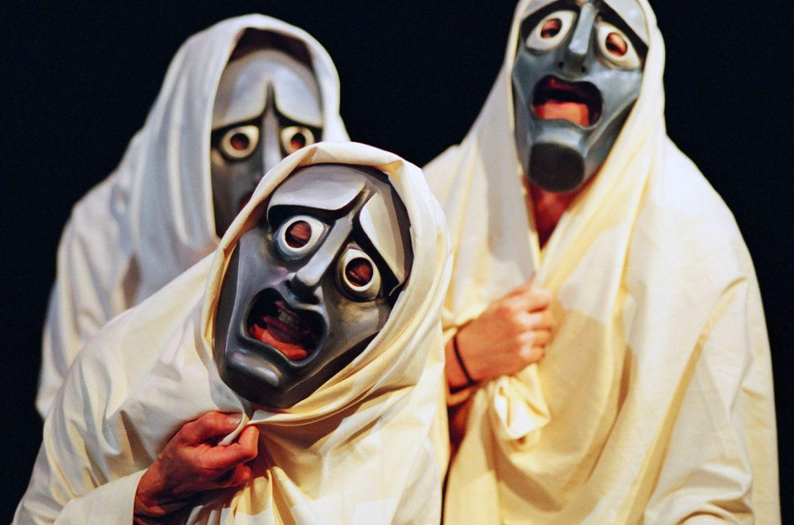

Passions
Stages of Expression: From Performance to Programming
By Valentina Morelos
I’ve always been drawn to the performing arts, to their ability to connect people, evoke emotion, and spark conversation. Nowhere has this passion felt more alive to me than in Mexico City, a metropolis bursting with cultural richness and artistic energy. With over 163 theaters, it proudly stands as the theater capital of the Spanish-speaking world, offering an endless array of stories, voices, and styles.
During both my studies and my professional career in acting, I had the privilege of being immersed in this dynamic landscape. From the grand elegance of the "Palacio de Bellas Artes to the raw intimacy of independent black-box theaters, every stage in Mexico City felt like a world of its own. It wasn’t just about performance, it was about belonging to a tradition that celebrates history, challenges the present, and dreams boldly of the future.
Through classical drama, modern Mexican works, and experimental pieces that push the boundaries of form, I learned not only to perform but to listen, to culture, to community, and to myself. These experiences shaped me profoundly, deepening my understanding of storytelling and reinforcing my belief that theater is more than entertainment, it’s a powerful force for connection and change.
What might seem surprising is how naturally this background in theater has translated into my work in programming. Acting trained me to approach problems creatively, adapt quickly, and work collaboratively—skills that are just as essential when writing code as they are when building a scene. Understanding structure, timing, and flow in performance has helped me grasp those same concepts in software development. And just like in theater, programming demands constant iteration, empathy for the “audience” (or user), and the courage to experiment and refine.
In many ways, stepping into programming has felt like stepping onto a new kind of stage—one where the script is written in code, but the goal remains the same: to create something meaningful, elegant, and human.
